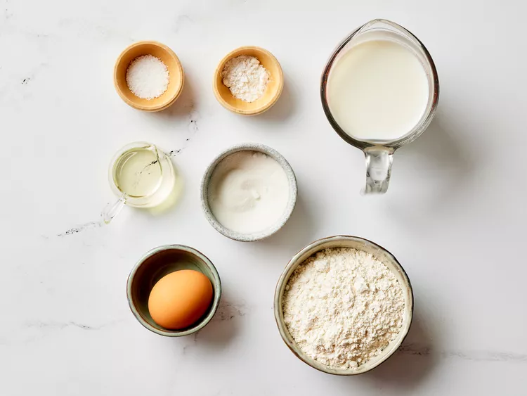

This easy pancake recipe doesn't require much thought early in the morning and the pancakes taste great!

Gather all ingredients.

Combine flour, sugar, baking powder, and salt in a large bowl. Make a well in the center, and pour in milk, oil, and egg. Mix until smooth.

Heat a lightly oiled griddle or frying pan over medium-high heat. Pour or scoop batter onto the , using approximately 1/4 cup for each pancake; cook until bubbles form and the edges are dry, 1 to 2 minutes. Flip and cook until browned on the other side. Repeat with remaining batter.
Serve hot and enjoy!